This tab has two parts. The first part shows four decisions that are still open, each with real renders and a recommendation. The second part shows what has landed on the branch since the last review. Every picture is a render of the code under it, made on the branch today unless its caption says otherwise.
Open decisions
1. Where a full-turn angle says it is closed two prototypes
The decision is where the option that opens a closed angle axis lives.
It can be on the coordinate space, as
Coord.clock({ closed: false }), or on the operator, as
spread({ closed: false }). Today the branch has no
option. A spread that fills a full turn leaves a gap after its last
part too, and nothing can turn that off. Both prototypes keep that
default and add the option. For every example below, the two
prototypes draw byte-identical images, so each picture is shown once.
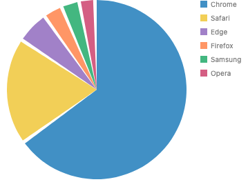
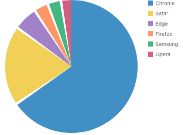
The default, both variants
{{code:rv-closed-pie}}The seam, on the coord
{{code:rv-closed-seam-coord}}The seam, on the operator
{{code:rv-closed-seam-op}}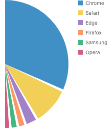

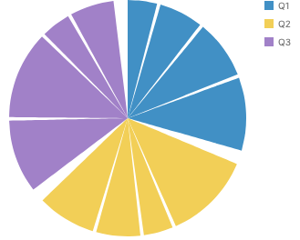
The half turn
{{code:rv-closed-half}}The chord arcs
{{code:rv-closed-chord}}The nested pie
{{code:rv-closed-nested}}
A wrong closed: true fails differently in each variant.
On the coord there is one message, and it comes when the space is
made. On the operator there are three messages for a spread, and they
come at render, because only the layout pass knows whether the chain
fills a full turn.
The error, on the coord
{{code:rv-closed-err-coord}}The errors, on the operator
{{code:rv-closed-err-op}}| On the coord | On the operator | |
|---|---|---|
| Where it is decided | Once, by the space. A chain closes when it fills a closed axis. | By each chain. The default still asks the space whether the angle is a full turn. |
| Public options touched |
closed on Coord.polar and
Coord.clock
|
closed on spread and on
Constraint.distribute
|
A wrong closed: true |
One message, when the space is made | Three messages for a spread and one for a distribute, at render |
| Library lines changed | about +40 and −20 | about +68 and −30 |
| What only this form can do | Nothing extra. | Open one chain and close another under the same full turn. No example has been found that needs this. |
The prototypes also differed on whether a radar line closes. That is left out here, because a radar outline is now drawn outside the coordinate space (see "Radar" below), so no line inside the space needs to ask.
closed on the coord, or on the operator.
Recommended: on the coord, because the operator's default has to ask
the space anyway, and the coord form gives one error at the call. If
you say yes, the coord patch moves onto the branch with its tests, the
descriptor entry and its Python mirror, and the reference pages for
Coord.polar and Coord.clock gain the option.
2. Whether spread keeps its slack option
today
The decision is whether spread keeps a
slack option. Slack is on
layer (slack: { x, y }) and on
spread (slack, along its dir).
On a spread it does nothing today. A lone chain of minimum gaps has no
room to spare, because nothing else fixes its span, so every rule puts
every part at its earliest place.


The three renders have byte-identical normalized DOM. In the throwaway
copy I also gave the spread its own width,
w: 340, and Slack.start and
Slack.end still gave identical DOM, so a spread's own
size does not give its chain room either.
On a spread
{{code:rv-spread-slack}}
On a layer, the same rule moves things, because other
relations in the layer fix a span that the minimum gaps do not fill.
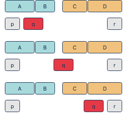
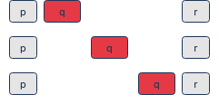
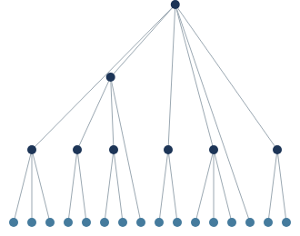
slack: { y: Slack.end() } puts
every leaf on the last level.
RowAll
{{code:rv-row-all}}RowPinned
{{code:rv-row-pinned}}Dendrogram
{{code:rv-dendrogram}}slack on spread, since it
is harmless, consistent with layer, and might matter once
a spread can carry extra relations. Or remove it, since an option that
does nothing is a wart. Recommended: remove it from
spread. If you say yes, spread loses the
option in JS, Python and the descriptor table, and the
Slack reference page names only layer. The
sankey sketch on "The slack rule" tab, which puts
Slack.even() on a spread inside a column, would need a
layer instead. That sketch does not work today anyway, as the note
above shows.
3. The rule for marks of one size at one anchor prototype
A mark's axis is either embedded or not. An embedded axis is a length
of the coordinate space, so it is drawn warped, e.g., a wedge in polar
space. An axis that is not embedded is ink, drawn flat with a fixed
pixel width, e.g., a line. GoFish decides this in
GoFishNode.resolveEmbedding in _node.ts,
with the rules for shared edges in sharedEdges.ts, and
the hand-set emX and emY flags are being
removed.
The decision is about one of the new rules, called R4 in the code comments. It says that marks aligned at one anchor with the same literal size share both edges, so they embed. It works when every bar in a rose has one width. When the inner bar is 0.8 of the width, the rule no longer applies, and every bar collapses to a line.
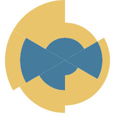
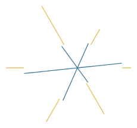
The rose (EqualSizeEmbedding)
{{code:rv-rose}}
The proposed replacement says that a plain number along the angle is
in radians, a unit of the space, so that axis embeds whatever its
neighbors are. A plain number along the radius stays pixels. I built
it in a throwaway copy. The space declares, per axis, whether a plain
number there is a quantity of the space, and the polar angle says yes
because it has the HasCycle trait (its coordinates
measure a turn). This is the nearest honest statement. A fully general
one needs a new axis trait for "the unit of a plain number", since
today only the polar budget rule in coord.tsx knows that
the radius is in pixels and the angle in radians.
The rule needed one exception. A circle with a literal radius in polar space has a fixed aspect ratio, so its size along the angle is tied to its size along the radius, which is pixels. Without the exception, GoTree's radial node-link diagram drew every 8 px dot as a full ring. I think this case belongs to the domain, since a ratio between radians and pixels has no meaning, but you should check it.
The radians rule changes one documented behavior. Along the angle a
lone bar with a literal width no longer stays a line, because along
the angle there are no pixels. A width of 0.6 becomes a wedge of 0.6
rad. The stories in "Polar Edge To Edge" were written with
w: 16 as "16 px", and 16 rad is more than two full turns,
so they draw as a full disc.
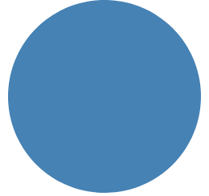
The lone bar
{{code:rv-lone-bar}}PixelBarAlone
{{code:rv-pixel-bar-alone}}PixelBarsApart has the same issue. Its bars are laid out 16 rad wide today too, since layout already reads a plain number along the angle as radians, and only the drawing reads it as pixels. Today they draw as bands that point in scattered directions. Under the radians rule they draw as a full disc.
The prototype found a problem with replacing R4. R4 also works along the radius, where plain numbers are pixels and the radians rule does not apply. GoTree's node-link sunburst has rings of one pixel thickness aligned at their middle, and R4 is what makes them embed. With R4 removed, its outermost ring of sixteen leaves is not drawn.
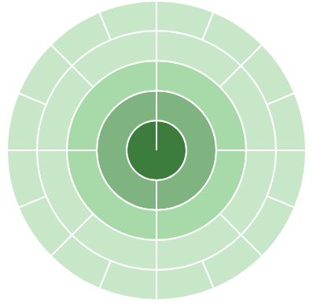
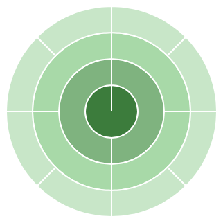
emX.
GoTree story with a hand-set emX |
R4 alone (today) | Radians rule, R4 removed | Radians rule, R4 kept |
|---|---|---|---|
| violin tree | needed | freed | freed |
| tornado tree | needed | freed | freed |
| tornado tree 2 | needed | freed | freed |
| nested pie tree | needed | freed | freed |
| node-link sunburst | needed | freed, but the leaf ring is lost | freed |
"Freed" means the story's normalized DOM is byte-identical to the
branch's render after the emX is deleted. "Needed" means
deleting it changes the render. With the radians rule and R4 kept,
every other story I rendered is unchanged, i.e., both rose stories,
the pie stories, all of "Polar Edge To Edge" except the three bar
stories, every GoTree node-link story, and the GoTree gallery
sunburst. The d3 hierarchy stories were checked with R4 removed, and
were unchanged. In test:embedding, three cases change:
the lone bar, the bars apart, and the two-width rose. Removing R4 also
changes the two cases for sunburst rings of one size aligned at the
middle.
emX flags come
out, and those three tests and stories are rewritten to say what they
now show.
4. Whether Coord.clock is a preset
today
The decision is whether Coord.clock is its own kind or a
preset. The new rule "a preset takes only the options it does not fix"
(commit 4834a5814) now holds for Overlap.sina,
Overlap.jitter, Shape.hull,
Shape.spine, and Slack.start,
center and end. The code calls
Coord.clock a polar preset
(polarPreset("clock")), but it is its own entry with its
own wire type. It sets baselineAngle: π/2 and
direction: -1 as defaults, and its docs say you can
override them. In each pie the red slice is the first one.
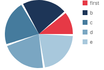
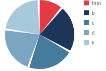
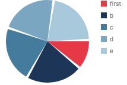
The third pie, if clock is a preset
{{code:rv-pies-preset}}The two spellings of the third pie have byte-identical normalized DOM.
Coord.clock is a kind with its own
defaults. It keeps its options, and the code and docs stop calling it
a preset. (b) It is a preset of Coord.polar. It loses
baselineAngle and direction, and "clockwise
from 3 o'clock" is written on Coord.polar, as above.
Recommended: (a). If you say yes, polarPreset is renamed,
and the word "preset" leaves its comments, the descriptor's doc and
the root CLAUDE.md. Nothing a user writes changes.
What landed
Minimum gaps and slack
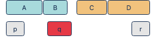
Spacing.atLeast(g) asks for a gap of at least g. The
layer's slack says where each part goes in the room the
gaps leave, from its earliest place (start) to its latest
(end).
The mean of positions
mean([...])
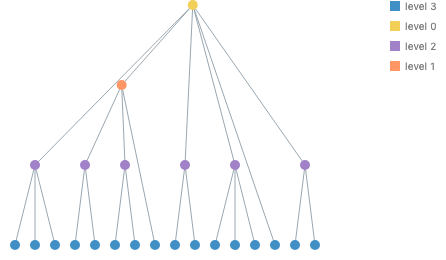
A parent sits at mean([...]) of its children, an operand
of Constraint.align. The dendrogram draws the same 23
links as the hand-computed Cluster story, to the pixel.
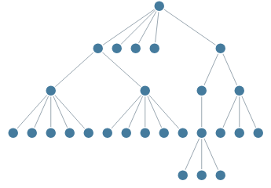
mean([...])
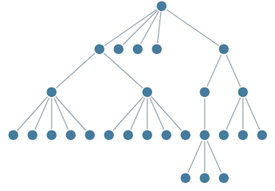
The tidy tree puts each node at the mean of its first and last child, and keeps nodes at one depth at least 10 apart. It draws the same 26 links as SepTreeStart.
{{code:rv-tidy}}A full-turn angle closes

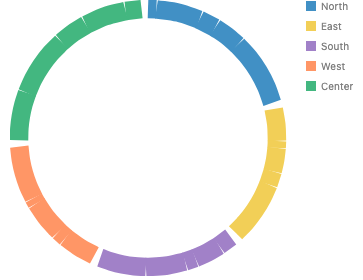
A spread that fills a full-turn angle leaves a gap after its last part
too, as d3's padAngle does. Both are plain
Coord.clock(), with no workaround.
Sunburst seams and the root disc
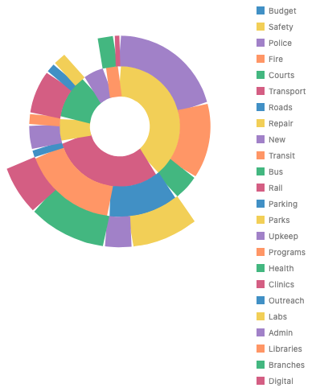
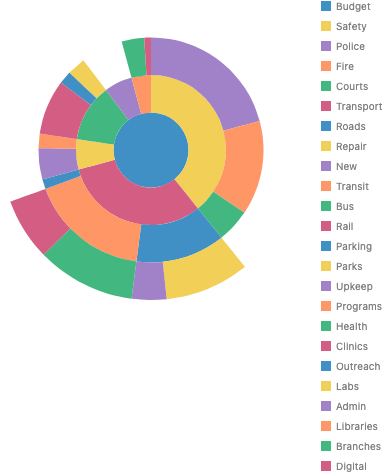
The rings have a pixel height, so they were drawn as ink, as thick
stroked arcs that did not meet. They should have embedded because they
touch, but that relational route to embedding was never implemented.
It is now, in sharedEdges.ts.
Radar outlines
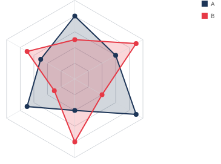
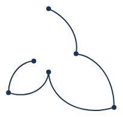
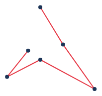
A mark outside a coordinate space reads a mark inside it where the
space draws it. So a polygon over
selectAll("pts") in a layer outside the polar space is a
straight, closed outline through the points.
InsideCoord
{{code:rv-radar-inside}}OutsideOpen
{{code:rv-radar-outside-open}}
Two caveats. First, the points sit at the right radius only because
the spokes beside them claim radius zero. A position channel along the
radius starts at the data's minimum, so without the spokes the
smallest value would sit at the center. Second, opacity
applies to the stroke too, so a faint fill with a crisp outline takes
two polygons.
Presets take only the options they do not fix
| Preset | Is the kind | Fixes | Still takes |
|---|---|---|---|
Overlap.sina() |
Overlap.noise |
smoothing: "silverman" |
randomness, padding,
seed
|
Overlap.jitter() |
Overlap.noise |
randomness: "uniform",
smoothing: Infinity
|
padding, seed |
Shape.hull() |
Shape.blob |
convexity: 1, neck: 1 |
connection, holes,
separate
|
Shape.spine() |
Shape.blob |
convexity: 0 |
connection, neck,
holes,
separate
|
Slack.start() |
Slack.at |
t: 0 |
nothing |
Slack.center() |
Slack.at |
t: 0.5 |
nothing |
Slack.end() |
Slack.at |
t: 1 |
nothing |
Passing a fixed option is a type error in TypeScript and an error at the call in both languages. The message names the kind to write instead.
{{code:rv-hull-error}}